Jr. Lancers Basketball
Complete User Guide
Everything you need to know about using the Jr. Lancers team app. This guide covers all features for parents, coaches, and viewers.
Table of Contents
Home Screen
Your dashboard showing the most important information at a glance.

Top: Player info & next game
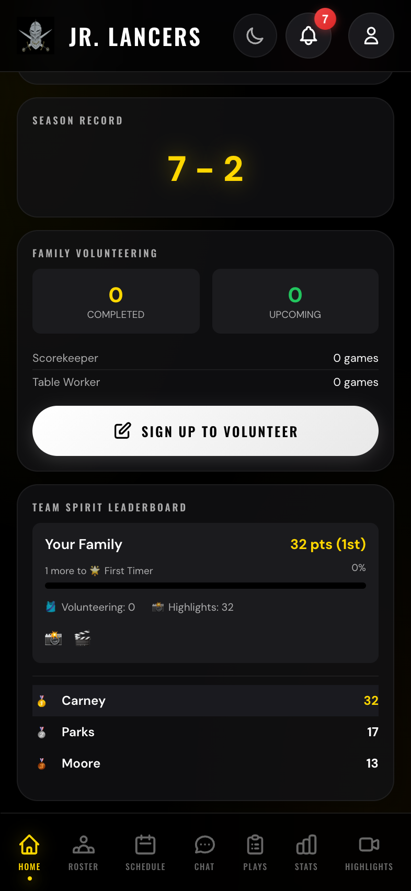
Bottom: Volunteering & leaderboard
What You'll See:
- Player Banner - Your child's name, number, and position (tap to switch if you have multiple children)
- Next Game Card - Date, time, opponent, location, and jersey color
- Live Stats Button - Appears during games (see Live Stats)
- Season Record - Team wins and losses
- My Volunteering - Your completed and upcoming volunteer roles
- Team Spirit Leaderboard - Families ranked by volunteer points and highlights uploaded
Team Spirit Points
| Activity | Points |
|---|---|
| Volunteering (scorekeeper or table worker) | +10 per game |
| Uploading a highlight | +1 per highlight |
Roster & Player Profiles
View all players, parents, and coaches on the team.
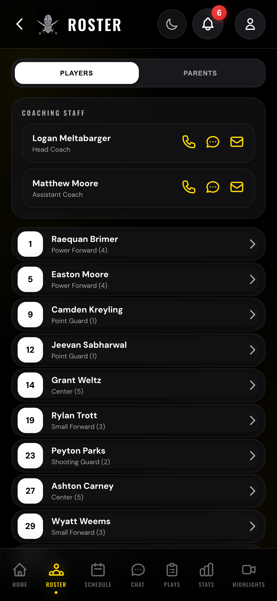
Players tab
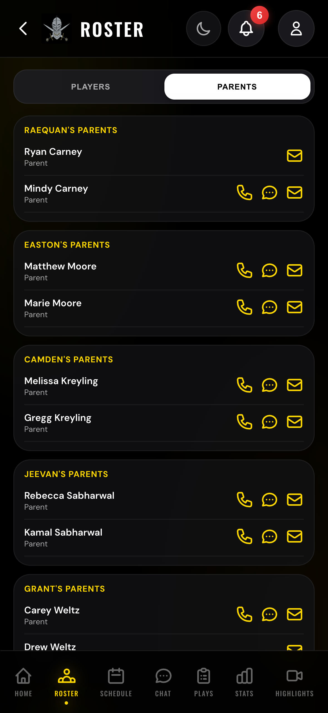
Parents tab
Features:
- Players Tab - All players with numbers and positions
- Parents Tab - Parent contact directory with phone/email
- Coaches - Shown at the top of the players tab
- Tap any player to view their full profile
Player Profile
Tap any player card to see their detailed profile with stats, highlights, and contact info.
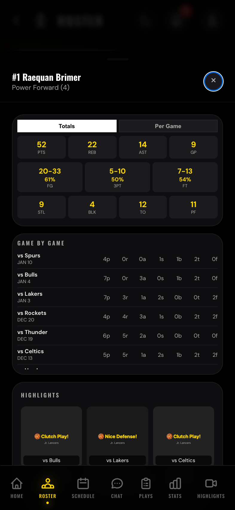
Player profile with season stats
Profile Sections:
- Season Stats - Aggregated totals with toggle for per-game averages
- Points, rebounds, assists, steals, blocks, turnovers, fouls
- Shooting percentages (FG%, 3P%, FT%)
- Game-by-Game Stats - Individual game performance history
- Highlights - Photos and videos featuring this player
- Contact Info - Parent names, phone numbers, and email
- Invited Viewers - Family members you've invited (your child only)
Game-by-Game Stats
See how a player performed in each individual game throughout the season.
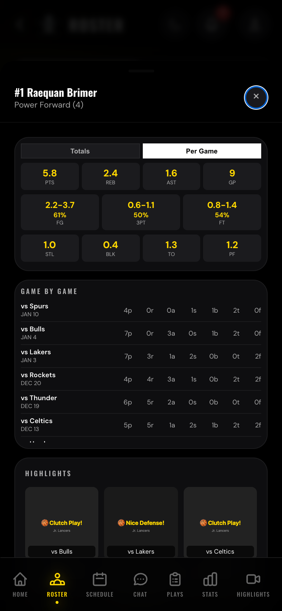
Individual game performance breakdown
Game-by-Game View:
- Date & Opponent - Which game the stats are from
- Result - Win or loss with final score
- Individual Stats - Points, rebounds, assists, and other stats for that game
- Shooting Breakdown - Made/attempted for 2PT, 3PT, and free throws
Tap any game row to jump to the full game details page.
Inviting Viewers (Family Members)
Parents can invite grandparents, aunts, uncles, or other family to follow the team.
To invite a viewer:
- Open your child's player profile
- Scroll to "Invited Viewers"
- Tap "+ Add"
- Enter their email, name, and relationship
- Tap "Send Invite"
They'll receive an email with registration instructions.
Schedule
View all games and practices for the season.
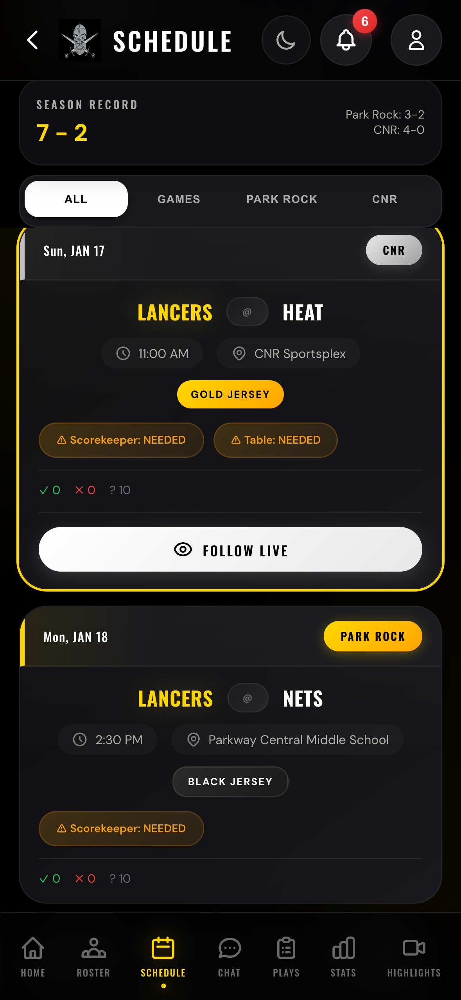
Upcoming games
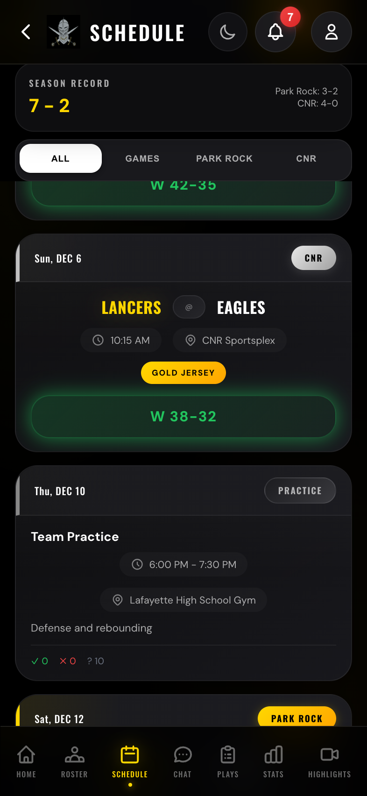
Completed games with scores
For Each Event:
- Date & Time
- Event Type - Game or Practice
- Opponent - Team name and league (Park Rock or CNR)
- Location - Gym address
- Jersey Color - Black or gold
- Attendance Count - How many have RSVP'd
- Volunteer Status - Icons show if positions are filled
Tap any event to see full details, RSVP, or sign up to volunteer.
Game Details
The game detail page shows everything about a specific game.
Upcoming Games
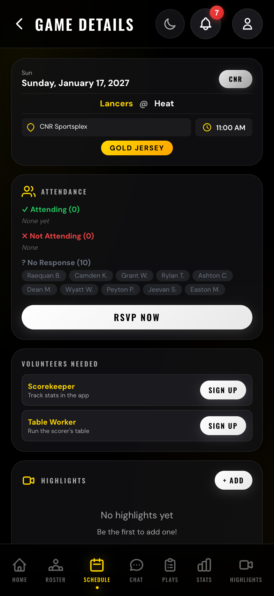
Game info
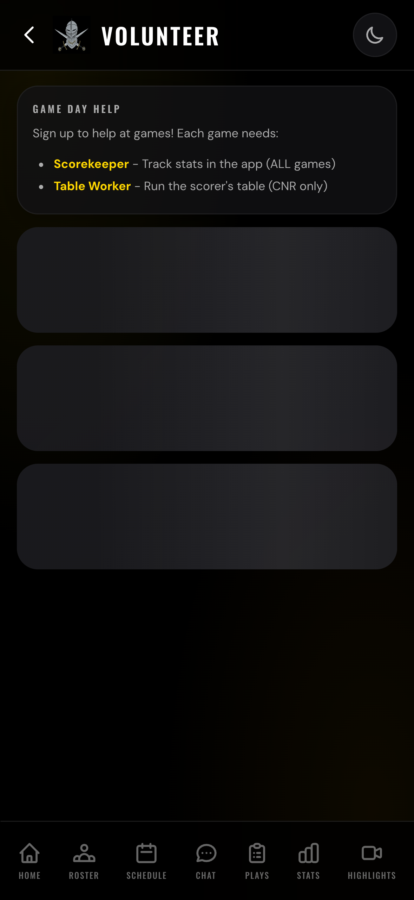
Volunteer signups
- Game Info - Date, time, location, opponent
- RSVP Section - See who's attending, submit your response
- Volunteers Needed - Sign up as scorekeeper or table worker
Completed Games
Completed games include all the details of how the game went - score, stats, play-by-play, and more.
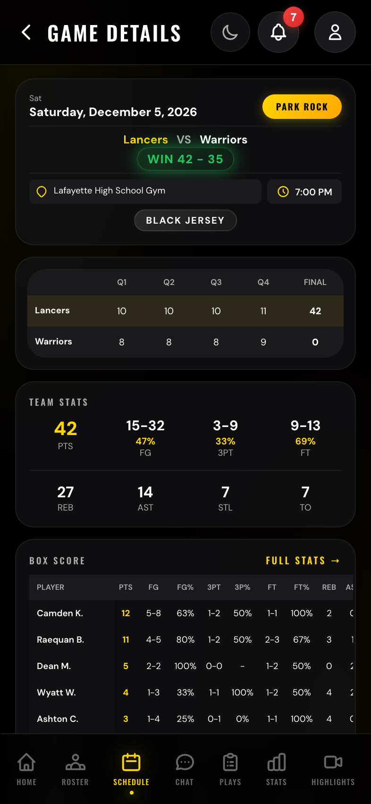
Final score & game info
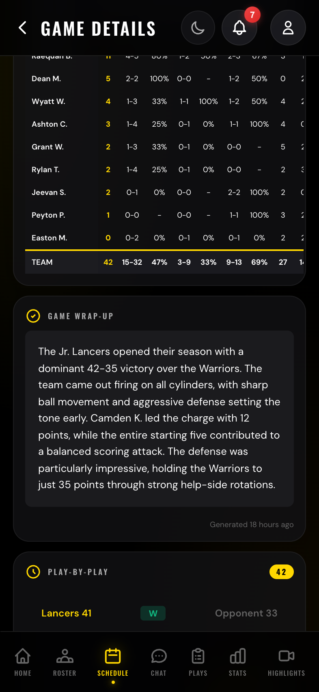
Player statistics
Game Info Section
- Final Score - Win/loss result with final score
- Quarter-by-Quarter - Score breakdown by period (Q1, Q2, Q3, Q4)
- Team Stats Summary - Quick overview of key team stats
Box Score (Stats)
Full statistical breakdown for every player who played in the game.
Complete box score with all player stats
Box Score Includes:
- Points (PTS) - Total points scored
- Field Goals (FG) - Made/attempted with percentage
- 3-Pointers (3PT) - Made/attempted with percentage
- Free Throws (FT) - Made/attempted with percentage
- Rebounds (REB) - Total rebounds
- Assists (AST) - Total assists
- Steals (STL) - Total steals
- Blocks (BLK) - Total blocks
- Turnovers (TO) - Total turnovers
- Fouls (PF) - Personal fouls
Play-by-Play (Game Flow)
A chronological timeline of every play that happened during the game.
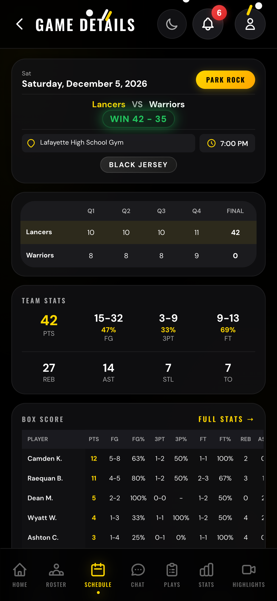
Play-by-play event feed
- Quarter Headers - Events grouped by quarter
- Scoring Plays - Every basket with player name and running score
- Other Plays - Steals, blocks, turnovers, fouls
- Timestamps - When each play occurred
- Highlight Links - Camera icon appears if a highlight is linked to that play
Game Highlights
Photos and videos captured during this game.
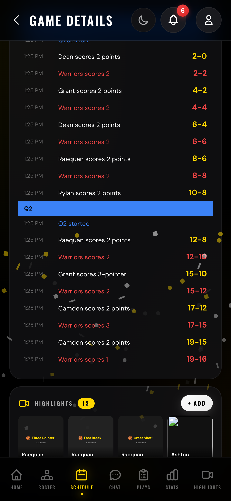
Highlights from this game
- Thumbnail Grid - Quick preview of all media
- Player Tags - See which player is featured
- Linked Plays - Some highlights are linked to specific plays in the play-by-play
- Tap any thumbnail to view fullscreen
Game Wrap-Up
Summary narrative and coach's notes about the game.
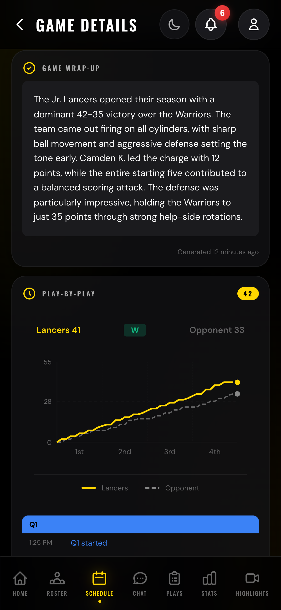
AI-generated game recap with coach's notes
- Narrative Summary - AI-generated recap describing key moments and how the game went
- Coach's Notes - Commentary from Coach about the game
- Player of the Game - Standout performer with their key stats
- Player Shoutouts - Recognition for great plays or effort
See the Game Wrap-Ups section below for more details on how wrap-ups work.
Attendance (RSVP)
Let Coach know if your child can make it to each game or practice.
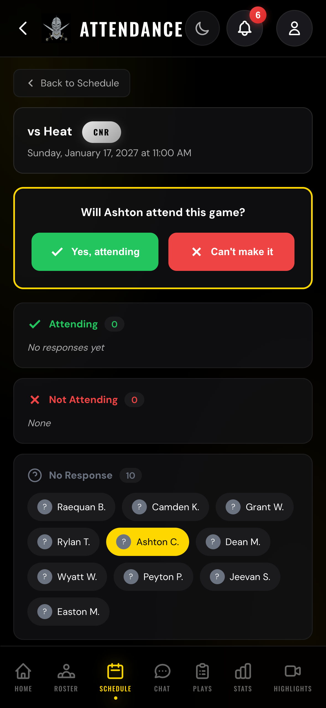
Attendance tracker
To RSVP:
- Go to Schedule and tap a game
- Find the Attendance section
- Tap "RSVP Now"
- Select "Attending" or "Can't Make It"
You can change your response anytime by tapping "Change".
Volunteering
Sign up to help at games! We need volunteers for every game.
Volunteer signup page
Volunteer Roles
| Role | What You Do |
|---|---|
| Scorekeeper | Track live stats in the app during the game. See Scorekeeping Guide. |
| Table Worker | Run the official scorer's table (CNR games only) - tracking fouls, timeouts, etc. |
To sign up:
- Go to a game's detail page or the Volunteers tab
- Find a game that needs volunteers
- Tap "Sign Up" for your preferred role
Team Spirit Scoreboard
The home page shows a Team Spirit Leaderboard ranking families by:
- Volunteer points - 10 points per game volunteered
- Highlight uploads - 1 point per photo/video uploaded
- 2 days before: "Volunteers Needed!"
- Day before: "URGENT: Volunteers Needed Tomorrow!"
- Game day: Reminder 10 minutes before game time
Messages & Chat
Team communication hub with three tabs.

Group Chat

Coach Posts

Text Contacts
Group Chat (Default Tab)
Real-time messaging with the whole team - parents and coaches.
- Type a message and tap send
- See who sent each message
- "New Messages" divider shows where you left off
Posts Tab
Official announcements from Coach. Only the head coach can create posts.
- Important updates and reminders
- Tap a post to view and add comments
- React with emojis
Text Tab
Contact directory for texting parents and coaches directly via SMS.
- Search for a person
- Tap "Text" to open your phone's messaging app
- Great for private conversations or coordinating carpools
Playbook
View all the team's plays with animated diagrams. Great for practicing at home!
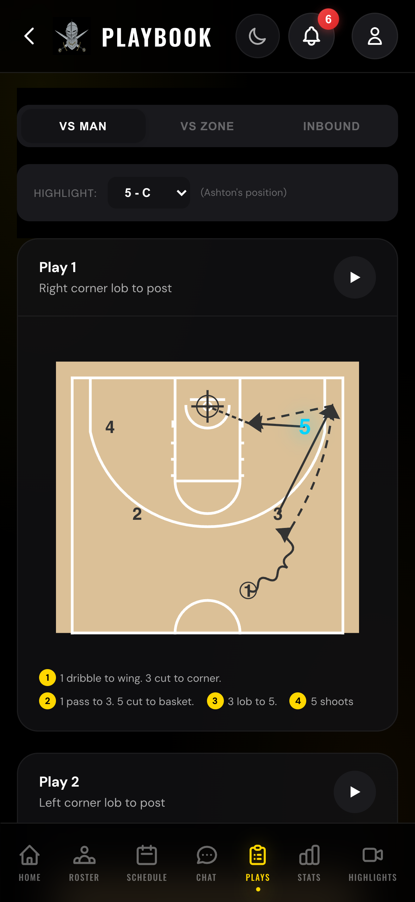
Playbook with plays
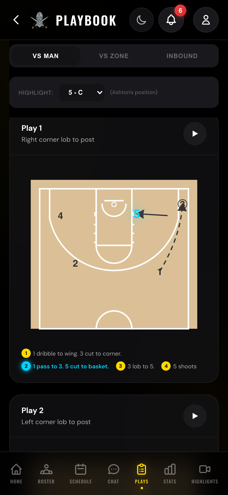
Play animation
How to Use:
- Select a category: VS MAN, VS ZONE, or INBOUND
- Choose a play from the list
- Use the "Highlight" dropdown to show your child's position highlighted on the court
- Tap "Go" to watch the play animate step-by-step
- Read the steps below the diagram
Position Highlighting
Select your child's position (1-5) from the "Highlight" dropdown to see their movements emphasized during animation. This makes it easy to understand exactly what your player does in each play.
Play Designer (Coaches Only)
Coaches can create and edit plays using the interactive Play Designer.
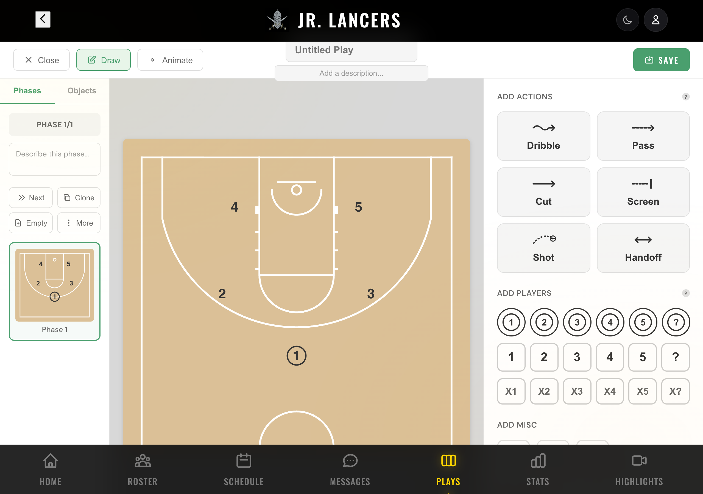
Play Designer with court and action tools
Features:
- Templates - Start from preset formations (Traditional, 5-Out, Horns, Box, etc.)
- Drag Players - Position players anywhere on court (including out of bounds for inbound plays)
- Draw Actions:
- Dribble - Wavy line
- Pass - Dashed line
- Cut - Solid line
- Screen - T-bar symbol
- Shot - Crosshair target
- Handoff - Arrow
- Multi-Phase Plays - Create plays with multiple steps
- Mirror Play - Flip the entire play horizontally
- Animation Preview - Watch the play animate before saving
- Publish - Make plays visible to parents in the Playbook
Live Game Stats
View real-time stats during games, or track them as the designated Scorekeeper.
Viewing Stats (Everyone)
During games, anyone can view live stats:
- From Home, tap "View Live Stats" during the game window
- Or go to Stats tab and select the game
- See the live scoreboard, player stats, and play-by-play feed
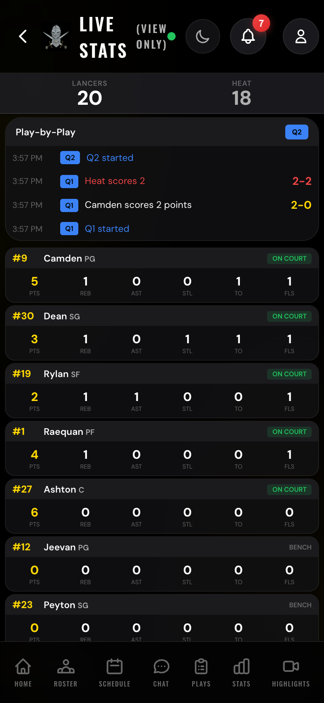
Stats viewing mode
Tracking Stats (Scorekeeper)
If you signed up as Scorekeeper, you'll see the full tracking interface with buttons.
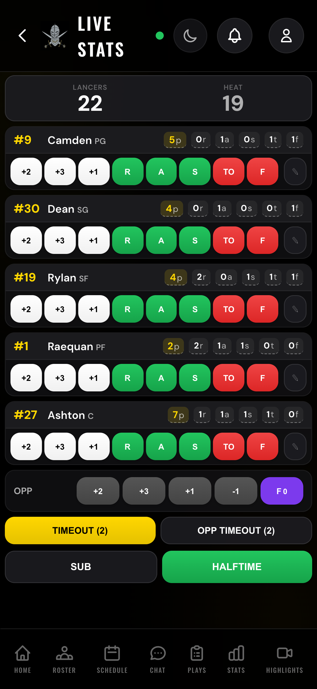
Scorekeeper tracking interface
See the full Scorekeeping Guide below for detailed instructions.
Scorekeeping Guide
Complete guide for tracking stats during games.
Live stats tracking interface with player buttons and game controls
Stat Buttons (For Each Player)
| Button | Tap | Long Press (hold) |
|---|---|---|
| +2 | Made 2-point shot | Missed 2-point shot |
| +3 | Made 3-point shot | Missed 3-point shot |
| +1 | Made free throw | Missed free throw |
| R (green) | Rebound | - |
| A (green) | Assist | - |
| S (yellow) | Steal | - |
| B (yellow) | Block | - |
| T (red) | Turnover | - |
| F (red) | Foul | - |
Recording Missed Shots
Long-press (hold) the +2, +3, or +1 button to record a missed shot:
- Press and hold the button
- A "MISS?" indicator appears at the top
- Keep holding until it changes to "MISS!"
- The missed shot is recorded with a red flash
Tracking missed shots enables accurate shooting percentage calculations.
Opponent Score
Use the OPP row at the bottom to track the opponent's score:
- +2, +3, +1 - Add points
- -1 - Subtract a point (to correct mistakes)
Substitutions
To make substitutions:
- Tap the "SUB" button
- Players on court are shown at the top
- Players on bench are shown at the bottom
- Tap a player on court to select them for removal
- Tap a player on bench to put them in
- The swap happens automatically
- Tap X to close when done
Always keep exactly 5 players on court.
Quarter Changes
Tap the quarter buttons to advance the game:
- Q1 → Q2 → HALF → Q3 → Q4 → END GAME
The current quarter is shown in the header.
Timeouts
Use the timeout buttons to track timeouts:
- TIMEOUT - Lancers timeout (shows remaining count)
- OPP TIMEOUT - Opponent timeout
Youth rules: 4 timeouts per half, 2 per overtime.
Ending the Game
After Q4, tap "END GAME" to finalize stats. This locks the stats and triggers the game wrap-up process.
Coach: Editing Stats After the Game
Coaches can edit stats for completed games:
- Go to Stats tab
- Select the completed game
- Tap any stat value to open the edit modal
- Enter made and missed values for shooting stats
- Tap Save
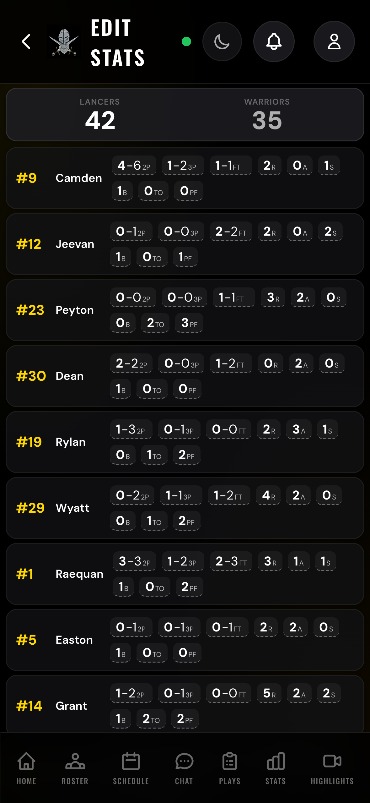
Coach editing completed game stats
Highlights
View and upload photos and videos from games.
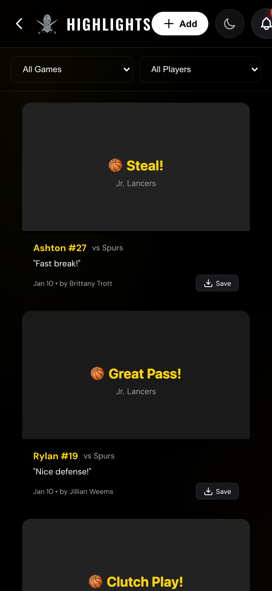
Highlights gallery
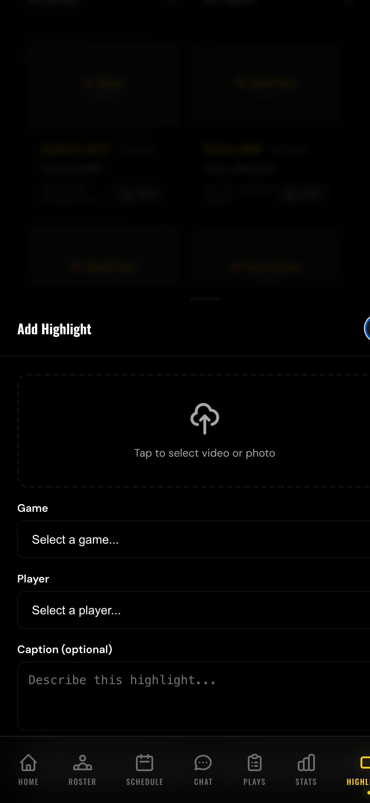
Upload form
Viewing Highlights
- Browse all highlights in a grid
- Filter by game - Select a specific game
- Filter by player - See one player's highlights
- Tap any thumbnail to view fullscreen
Uploading Highlights
To upload a highlight:
- Tap the camera icon (upload button)
- Select your photo or video
- Choose which game it's from
- Select which player is featured
- Add a caption (optional)
- Tap "Upload"
Smart Timestamp Matching
Auto-matching: When you upload a photo or video taken during a game, the app reads the file's timestamp and tries to match it to a specific play in the play-by-play feed.
If a match is found, the game and player are automatically selected, and the highlight gets linked to that specific play!
Highlights appear in multiple places:
- Main Highlights gallery
- Game detail page
- Player profile modal
- Play-by-play feed (linked plays show a camera icon)
Game Wrap-Ups
After each game, a wrap-up summary is generated with highlights of the game.
Game wrap-up section
What's in a Wrap-Up:
- Narrative Summary - AI-generated game recap describing key moments
- Coach's Notes - Commentary from Coach about the game
- Player of the Game - Standout performer with their stats
- Highlight Reel - Compiled video of game highlights (when available)
How It Works:
- Game ends (scorekeeper taps "END GAME")
- Coach has a window to add notes and shoutouts
- AI generates a narrative summary based on stats
- Coach reviews and approves
- Everyone receives a notification when published
Find wrap-ups at the bottom of any completed game's detail page.
For Viewers (Grandparents, Relatives)
Viewers are family members invited by parents to follow the team.
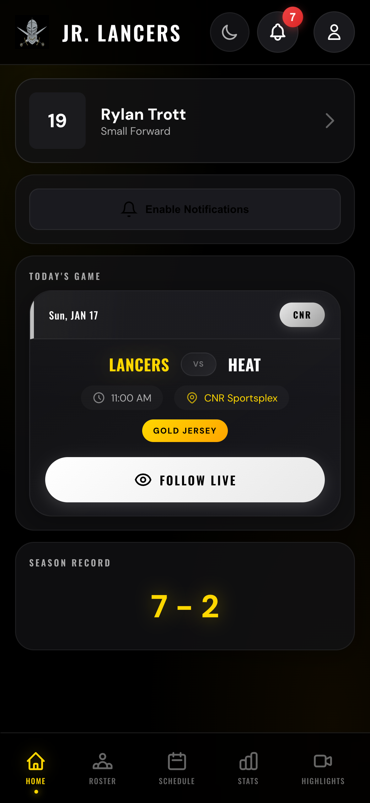
Viewer home screen
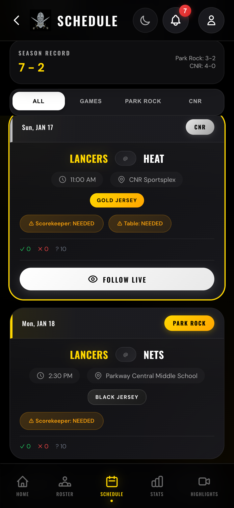
Limited navigation
Viewers CAN:
- View the schedule and game results
- View the roster and player stats
- View and upload highlights
- View game details, box scores, and wrap-ups
- View live stats during games
Viewers CANNOT:
- Access team chat or posts (private team communication)
- View the playbook (team strategy)
- RSVP for attendance
- Sign up to volunteer
How to Get Invited
Ask the player's parent to invite you from their child's player profile. They'll need your email address. You'll receive an email with instructions to create your account.
Universal Features
Dark / Light Mode
The app defaults to dark mode. Tap the moon/sun icon in the header to switch.
Dark mode (default)
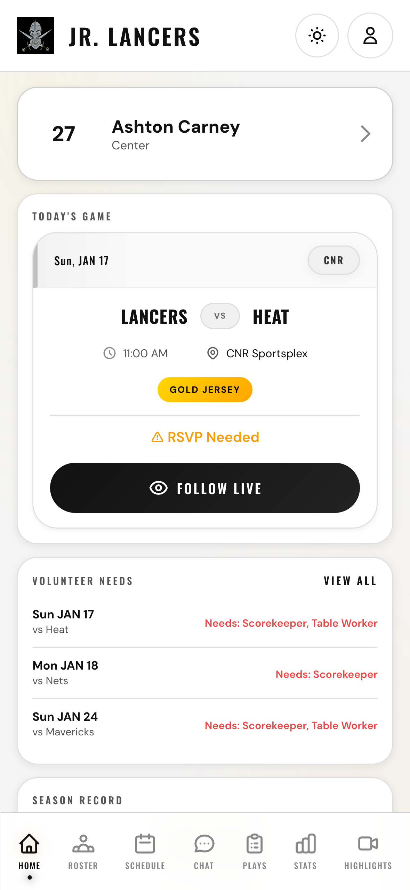
Light mode
Push Notifications
Get notified about important team updates:
- New chat messages
- Coach announcements (posts)
- RSVP reminders
- Volunteer reminders
- Game starting soon (for scorekeepers)
- Game wrap-up ready
To enable notifications:
- Look for the notification prompt on the home screen
- Tap "Enable Notifications"
- Allow when your phone asks for permission
Install as App
For the best experience, install the app to your home screen. See the Installation Guide.
- Works offline for viewing previously loaded data
- Opens faster without browser UI
- Feels like a native app
Notification Bell
The bell icon in the header shows unread notifications. Tap to see recent alerts and navigate to relevant pages.
Tips & Quick Reference
Game Day Checklist
- RSVP - Make sure you've responded for the game
- Check Chat - Look for any last-minute updates
- Review Plays - Practice with your child using the Playbook
- Arrive Early - Be there for warm-ups
- Take Photos/Videos - Upload them as highlights!
- If Scorekeeping - Arrive 10 min early to get set up
Navigation Quick Reference
| Tab | What It's For |
|---|---|
| Home | Dashboard, next game, volunteering scoreboard |
| Roster | Players, parents, contacts, player profiles, invite viewers |
| Schedule | Games, practices, RSVP, volunteer signups |
| Chat | Group chat, coach posts, text contacts |
| Plays | Animated playbook diagrams |
| Stats | Live stats, game history, stat tracking |
| Highlights | Photos and videos from games |
User Roles Summary
| Feature | Coach | Parent | Viewer |
|---|---|---|---|
| View schedule/roster/stats | ✓ | ✓ | ✓ |
| RSVP & volunteer | ✓ | ✓ | ✗ |
| Team chat & posts | ✓ | ✓ | ✗ |
| View playbook | ✓ | ✓ | ✗ |
| Upload highlights | ✓ | ✓ | ✓ |
| Track live stats | ✓ | As scorekeeper | ✗ |
| Edit stats after game | ✓ | ✗ | ✗ |
| Create/edit plays | ✓ | ✗ | ✗ |
| Invite viewers | ✓ | ✓ (own child) | ✗ |
Need Help?
Contact Coach Logan:
Email: lmeltabarger@icloud.com
Phone: 314-258-1513